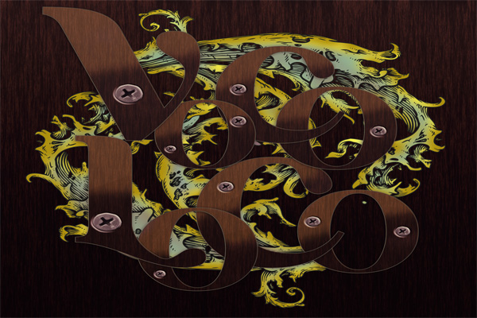
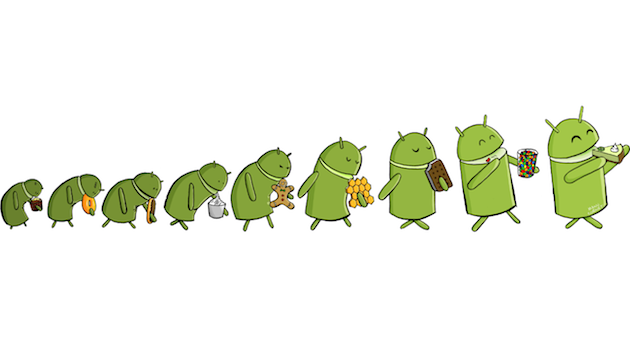
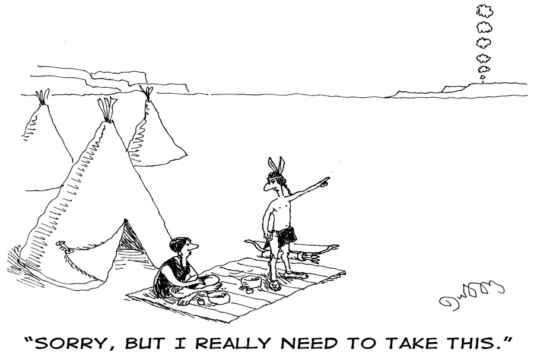
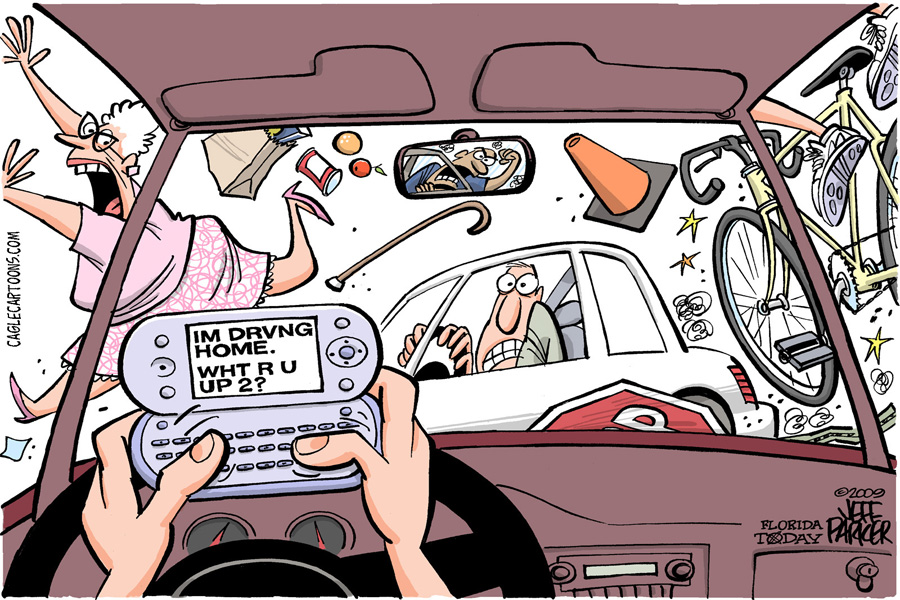

What is VocoLoco?
VocoLoco is a Group Messaging application made for the Android Platform that allows users to send and play messages to and from their friends, written in C++ and QML.

Evolution
Breathing, drinking and eating is not all that is necessary to live these days; we need to tell people that we are doing all this. From the Quill Pen, to the Pencil and Paper, to the Printing Press, to the use of Pens, to the Telegraph, to the Telephone, to the Wireless Phone, to Instant Messaging, to Text Messaging, the advances in sending messages over the centuries has evolved immensely

In the Past...it was like this...

Now Messaging is Like This...

Android Platform
VocoLoco is run on the Android Platform. This is a Linux-Based operating system designed for touchscreen mobile devices. Android is open-source that is provided by Google.